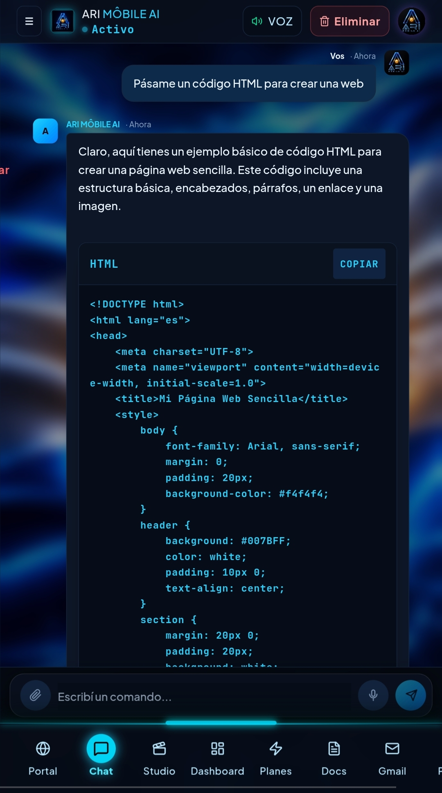
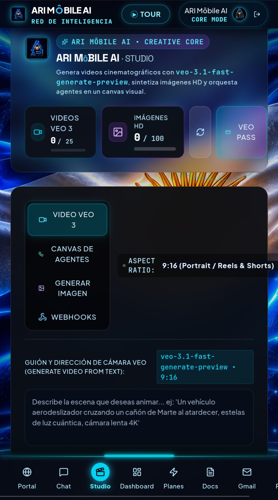
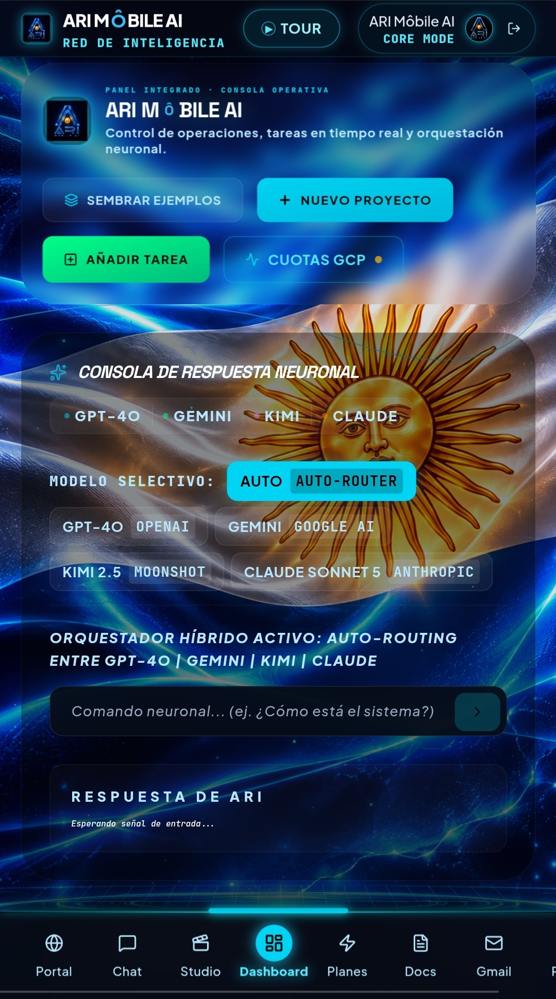
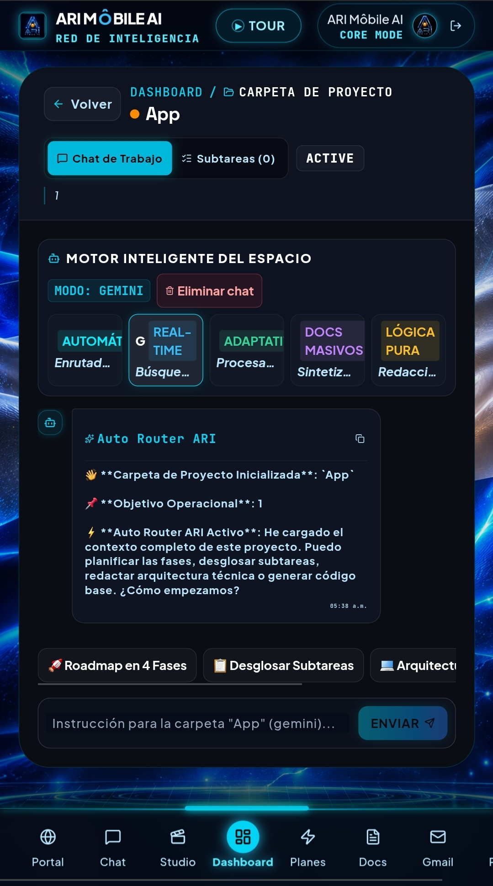
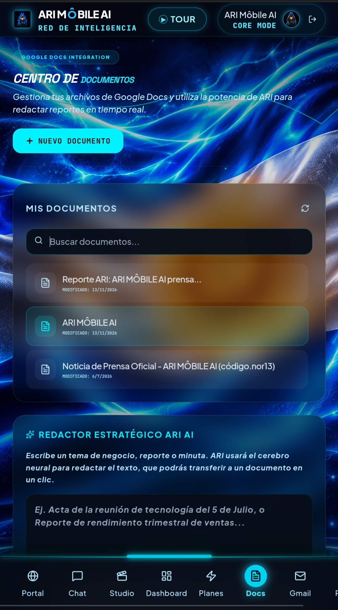
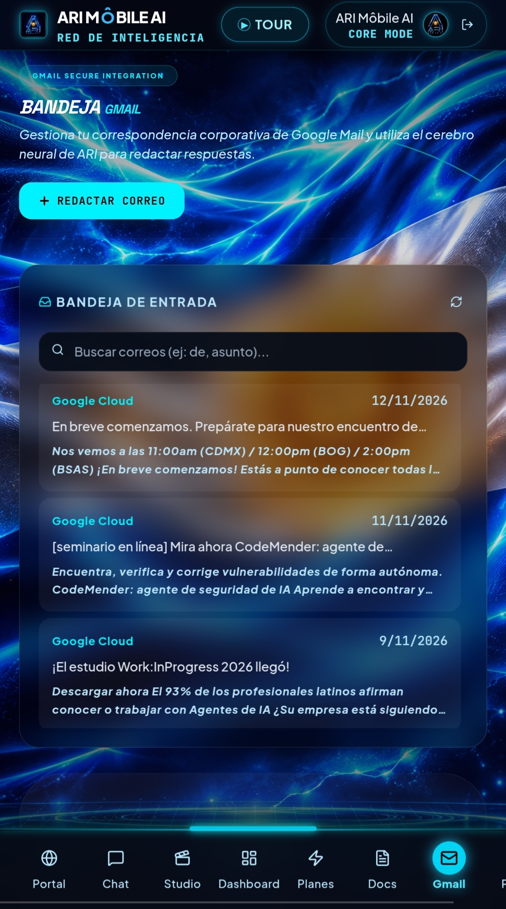
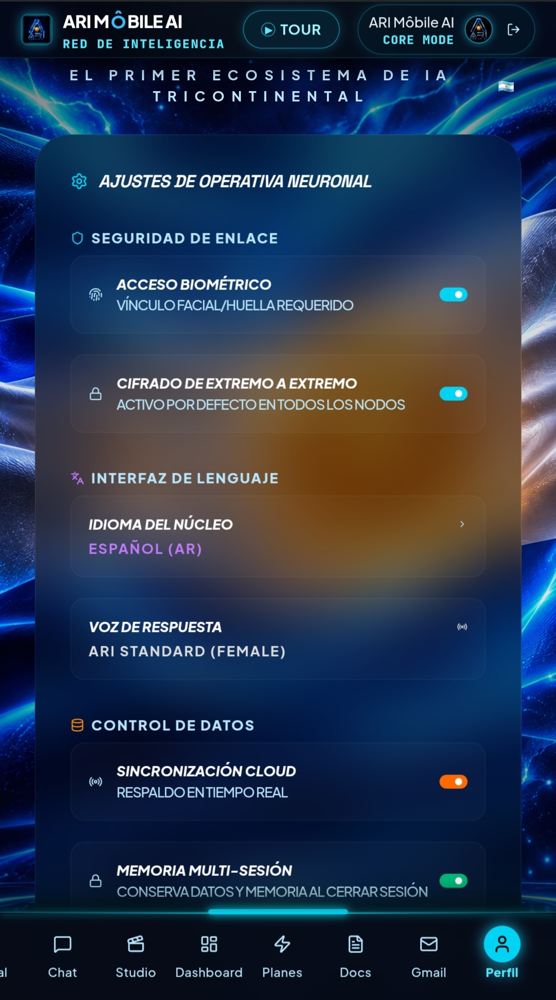

En el competitivo tablero de la inteligencia artificial, donde los ecosistemas cerrados y el dominio del idioma inglés marcan las reglas, una revolución silenciosa se ha estado gestando desde Villa María, Córdoba. El desarrollador independiente Diego Leonardo Ramírez acaba de abrir el telón de la Beta Global 2027 de ARI MÔBILE AI, una plataforma que no busca competir con los modelos fundacionales, sino dominarlos a todos desde una sola consola operativa.
Las primeras capturas del sistema revelan una declaración de principios visual y arquitectónica: la interfaz de usuario se despliega sobre el Sol de Mayo y la bandera argentina. No es un mero detalle estético, es el manifiesto de lo que su creador define como un "ecosistema soberano unificado".
"El impacto real no es chatear con una IA en inglés traducido, sino construir una infraestructura donde el español nativo sea el código base del razonamiento y la ejecución de alto nivel."
El Auto-Router: Un cerebro que decide por los gigantes
La verdadera joya de ingeniería detrás de ARI MÔBILE AI radica en su consola de Respuesta Neuronal y su sistema de Auto-Routing. En lugar de obligar al usuario a elegir qué modelo usar, el orquestador analiza la orden en microsegundos y la deriva al cerebro más apto.

Integración Estratégica Simultánea:
- OpenAI GPT-4o: Procesamiento adaptativo y multimodal de alta velocidad.
- Google Gemini: Grounding en tiempo real y contexto masivo sincronizado (Search Grounding 3.8 Flash).
- Anthropic Claude: Lógica pura, arquitectura de código estricta y redacción ejecutiva.
- Moonshot Kimi: Sintetización milimétrica para historiales y documentos masivos.
El Español Nativo como Ventaja Competitiva
A diferencia de las plataformas globales que procesan en inglés y traducen la salida, ARI MÔBILE AI fue forjado con un núcleo lingüístico en Español (AR). Este hito arquitectónico elimina la "fricción de traducción" en los prompts complejos (Zero-Shot y Few-Shot), logrando que los motores razonen con modismos, normativas y contextos culturales propios de la región hispanohablante. Las capturas de la sección de Ajustes de Operativa Neuronal confirman la prioridad del idioma del núcleo y la implementación de un ecosistema tricontinental.

Ejecución y Productividad Extrema
Las visuales liberadas para la prensa técnica confirman que ARI no es un chatbot pasivo. Es un entorno de ejecución. El sistema incluye un Centro de Documentos que se integra nativamente con Google Docs, una Bandeja Secure Gmail para redactar correos institucionales, y un Creative Core Studio impulsado por Google Veo 3 para la generación de video cinematográfico en formatos 9:16.




Todo el andamiaje está respaldado por telemetría en tiempo real sobre Google Cloud Run y Firestore, garantizando cuotas cifradas de grado bancario (PCI-DSS). Adicionalmente, las vistas operativas de control reflejan el monitoreo exhaustivo de tareas y subtareas. Con la mira puesta en el 2027, el desarrollador argentino Diego Leonardo Ramírez no solo responde al debate global sobre la IA: ha entregado la infraestructura para dominarlo.
